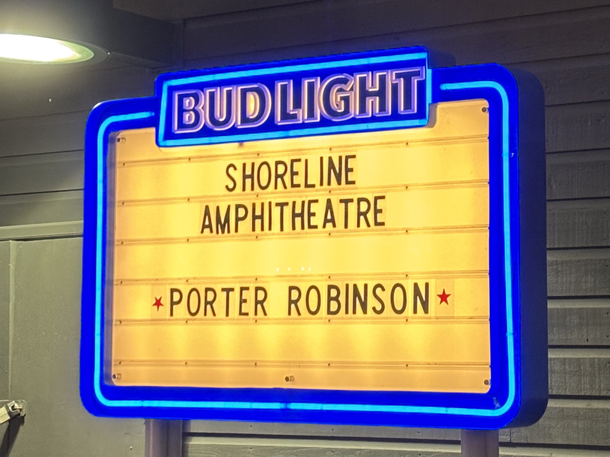

2024-11-15
Thoughts | Porter Robinson: Why I Love Shelter

“… I think the whole idea of like, a beautiful apocalypse is really evocative to me. I love that. Y'know, this isn't a zombie death thing here, this is, this is like pretty, y'know? This is... a beautiful world kind of disappearing in a clean way. That's sort of how I see it." ( Porter Robinson , on “Goodbye To A World”)
Shelter , a YouTube video released on October 18, 2016, has continued to be one of my favorite pieces of short media for over seven years. Six-minutes of animation from A-1 Pictures alongside an original track by Porter Robinson and Madeon, it has amassed over 83 million views.
“Shelter tells the story of Rin, a 17-year-old girl who lives her life inside of a futuristic simulation completely by herself in infinite, beautiful loneliness. Each day, Rin awakens in virtual reality and uses a tablet which controls the simulation to create a new, different, beautiful world for herself. Until one day, everything changes, and Rin comes to learn the true origins behind her life inside a simulation.”
The description undersells the emotions that this video evoked in me. In a way few other pieces of media have been able to evoke since, this video masterfully strikes the ideas of comfortable desolateness, confined wanderlust, and beautiful apocalypse.
Comfortable Desolateness - The feeling of being alone, in a vast, lifeless space, with absolute assuredness of your safety. Similar feelings: Taking a walk outside late at night, transiting overnight in an empty airport alone, watching the sunset on a quiet beach, private VRChat worlds. The feeling of comfort you get whilst being in unfamiliar, empty environments, the vastness you feel without any fear or nervousness.
Confined Wanderlust - The feeling that you can do anything, whilst being confined in a room or space. Similar feelings: being online during COVID, late-night Discord calls. A feeling which mixes escapism and creativity, the contrast between your physical and mental states, the pent-up physical energy you use for your mind instead.
Beautiful Apocalypse - A beautiful end of the world, without prolonged pain, anguish, or suffering. A romanticisation of ending it all. Not necessarily suicidal; a passive resignation to an ending. Similar feelings: The tide washing away footprints, closing the final page of a book, the final day of school.
Shelter brings these feelings to the forefront, inviting you into a state of melancholy, reminiscing of times long past that you can no longer change, that start to feel comforting in hindsight. Feeling both trapped and infinitely free, it lets you explore both scopes of your mind to the fullest. Shelter was what inspired me to start daydreaming more, to imagine worlds that could be, solely to feel emotions that are difficult to feel otherwise. This has led me to embrace tranquility , and it's not an overstatement to say that Shelter helped me develop my ability to reflect.